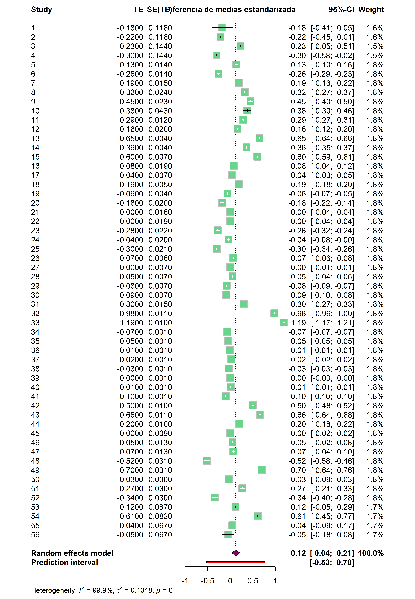

| Medida | Interpretación | Escala | Rango | Número de estudios | Precisión |
|---|---|---|---|---|---|
| Q de Cochran | Evalúa si la variabilidad observada es mayor a la esperada por azar. | Absoluta | [0, ∞) | Dependiente | Dependiente |
| I² | Porcentaje de la variación total atribuible a la heterogeneidad entre estudios. | Porcentaje | [0, 100] | Independiente | Dependiente |
| H² | Razón entre la varianza observada y la varianza esperada bajo homogeneidad. | Absoluta | [1, ∞) | Independiente | Dependiente |
| τ² | Varianza entre los efectos verdaderos de los estudios incluidos. | Varianza | [0, ∞) | Independiente | Independiente |
Modelos de meta-análisis
Tamara Ricardo ![]()
Introducción
Uno de los objetivos principales del modelado estadístico es representar la realidad de la manera más “sencilla” posible, capturando su estructura esencial y descartando elementos cuya variabilidad podría generar ruido en la interpretación de los fenómenos.
Para ajustar un modelo estadístico, partimos de los datos disponibles y buscamos construir una representación basada en ellos. En el caso de los modelos de meta-análisis, los datos de interés son los estimadores de efecto obtenidos en cada estudio, y el objetivo principal es analizar la variabilidad entre ellos, la cual puede deberse a diferencias metodológicas, características de las poblaciones estudiadas u otras fuentes.
Existen dos enfoques principales en meta-análisis: los modelos de efectos fijos y los modelos de efectos aleatorios. Durante este curso, describiremos sus características fundamentales y su implementación en R. Para quienes deseen profundizar en los fundamentos matemáticos de estos modelos, recomendamos consultar el Capítulo 4 de Schwarzer, Carpenter, y Rücker (2015) y el Capítulo 2 de Harrer et al. (2021).
Modelos de efectos fijos
El modelo de efectos fijos parte de la premisa de que todos los estimadores de efecto incluidos en el meta-análisis (\(y_k\)) provienen de una población homogénea. Es decir, se asume un único efecto verdadero subyacente, denotado como \(\theta\), y que las diferencias observadas entre estudios se explican únicamente por el error muestral (\(\epsilon_k\)).
\[ y_k = \theta + \epsilon_k \tag{1}\]
Este error muestral es dependiente del tamaño de la muestra y equivalente al error estándar del estimador. El objetivo es entonces calcular \(\theta\) usando el promedio ponderado de los estimadores de efecto individuales.
\[ \theta = \frac{\sum{y_k w_k}}{\sum{w_k}} \qquad donde~w_k = \frac{1}{S^2_{y_k}} \tag{2}\]
En el modelo de efectos fijos, los estudios con menor varianza poseen mayor influencia sobre la estimación global. Esta estrategia de ponderación se conoce como el método de la varianza inversa.
Como se supone que los estudios son homogéneos entre sí, no se considera la existencia de fuentes de variabilidad adicionales. Por esta razón, también se les conoce como modelo de efecto común (common effect model) o modelo de efectos equivalentes (equal effect model).
No obstante, en la práctica, es frecuente encontrar heterogeneidad real entre los estudios, lo que hace inadecuado el enfoque de efectos fijos. En estos casos, conviene optar por un modelo de efectos aleatorios, que incorpora explícitamente esa heterogeneidad en la estimación del efecto global.
Modelos de efectos aleatorios
Los modelos de efectos aleatorios asumen que, además del error muestral, existen fuentes adicionales de variabilidad entre los estudios. A diferencia del modelo de efectos fijos, no se postula un único efecto verdadero común, sino que se considera que cada estudio estima un efecto específico, que varía alrededor de una media global.
La relación entre el estimador de efecto para cada estudio (\(y_k\)) y su efecto verdadero se expresa como:
\[ y_k = \theta_k + \epsilon_k \tag{3}\]
En este enfoque, los verdaderos efectos de los estudios (\(\theta_k\)) no son idénticos, sino que se distribuyen según una distribución de probabilidad con media \(\mu\) y desvío estándar \(\tau\),
Reemplazando \(\theta_k\) en la ecuación anterior:
\[ y_k = \mu + \tau_k + \epsilon_k \tag{4}\]
donde:
\(\tau_k\) representa el desvío del efecto verdadero del estudio \(k\) con respecto a la media global.
\(\epsilon_k\) es el error muestral.
El objetivo del modelo es estimar la media de la distribución de efectos verdaderos (\(\mu\)), teniendo en cuenta tanto la variabilidad dentro de los estudios (error muestral) como la variabilidad entre estudios (heterogeneidad). Para ello, cada estudio se pondera mediante una versión ajustada del método de la varianza inversa:
\[w^*_i = \frac{1}{S^2_{y_k} + \tau^2} \qquad donde~\tau^2 es~ la~ varianza~entre~estudios \tag{5}\]
El valor de tau-cuadrado no se conoce de antemano y debe estimarse a partir de los datos. Entre los métodos más utilizados se encuentran el estimador de DerSimonian y Laird y la máxima verosimilitud restringida (REML). Aunque su desarrollo técnico excede los objetivos de este curso, es importante destacar que la elección del método puede influir tanto en la estimación del efecto global como en la amplitud de los intervalos de confianza.
Indicadores de heterogeneidad
En un meta-análisis, la variabilidad observada en los resultados puede deberse a diversas fuentes:
Variabilidad intraestudio: refleja las diferencias entre los participantes dentro de cada estudio.
Heterogeneidad entre estudios: representa la variación en los efectos estimados que no puede atribuirse únicamente al azar.
Error de muestreo y otras fuentes de incertidumbre, que también pueden influir en las diferencias observadas.
La heterogeneidad entre estudios es particularmente importante, ya que permite evaluar si los efectos estimados varían más de lo esperado por error aleatorio. Identificar y cuantificar esta heterogeneidad es esencial para decidir si corresponde utilizar un modelo de efectos aleatorios en lugar de uno de efectos fijos.
La siguiente tabla, adaptada de Schwarzer, Carpenter, y Rücker (2015), presenta los principales indicadores utilizados para cuantificar la heterogeneidad:
Estos indicadores permiten evaluar si las diferencias observadas entre los estudios justifican el uso de un modelo de efectos aleatorios. A modo de síntesis:
El estadístico \(Q\) de Cochran aumenta con el número de estudios (\(k\)) y su precisión (tamaño muestral).
Tanto \(I^2\) como \(H^2\) se derivan de \(Q\) y son independientes del número de estudios, pero no de su precisión.
La varianza entre estudios, \(\tau^2\), y su desvío estándar (\(\tau\)), son independientes tanto de \(k\) como de la precisión, pero su interpretación es menos intuitiva.
Entre estos indicadores, \(I^2\) y su intervalo de confianza del 95 % son los más comúnmente reportados. Su interpretación usual es:
Hasta 25 %: heterogeneidad baja.
Entre 25 % y 50 %: heterogeneidad moderada.
Más del 75 %: heterogeneidad alta.
Para complementar la información proporcionada por \(I^2\), se recomienda reportar un intervalo de predicción, que indica el rango en el que podrían encontrarse los efectos verdaderos de estudios futuros, considerando la heterogeneidad estimada a partir de la evidencia actual.
Implementación en R
Existen diversos paquetes para ajustar modelos de meta-análisis en R, siendo los más utilizados metafor (Viechtbauer 2010) y meta (Balduzzi, Rücker, y Schwarzer 2019). Ambos ajustan modelos robustos, pero difieren en su enfoque, facilidad de uso y otras características.
| metafor | meta | |
|---|---|---|
| Característica principal | Flexibilidad y potencia | Facilidad de uso |
| Curva de aprendizaje | Moderada a alta | Apto para principiantes en R |
| Tipo de datos | Puede manejar diversos tipos de datos y transformaciones | Funciones específicas para cada tipo de datos |
| Meta-regresiones | Permite múltiples covariables e interacciones | Permiten una o pocas covariables |
| Análisis de subgrupos | Meta-regresión con predictores categóricos | Argumentos específicos para análisis de subgrupos |
| Salida | Detallada, muestra estadísticos avanzados | Concisa, orientada a interpretar los resultados |
Dado que este curso se enfoca en la aplicación práctica del meta-análisis, utilizaremos principalmente el paquete meta, que ajusta por defecto modelos de efectos fijos y aleatorios, e incluye distintos estimadores de heterogeneidad estadística.
Estructura básica
El paquete meta ofrece una serie de funciones para ajustar modelos de meta-análisis con una estructura uniforme. La función principal es metagen(), que permite trabajar con datos precalculados. Sus argumentos principales son:
metagen(
1 TE,
2 seTE,
3 studlab,
4 data,
5 subset,
6 common,
7 random,
8 subgroup,
9 cluster,
10 prediction,
11 backtransf,
...
)- 1
- Estimador de efecto individual.
- 2
- Error estándar el estimador de efecto individual.
- 3
- Identificador único del estudio (opcional).
- 4
- Conjunto de datos a utilizar (opcional).
- 5
- Filtrar estudios por una condición (opcional).
- 6
-
Ajustar modelo de efectos fijos (
TRUE/FALSE). - 7
-
Ajustar modelo de efectos aleatorios (
TRUE/FALSE). - 8
- Definir variable para análisis de subgrupos (opcional).
- 9
- Definir variable para ajuste de modelo multinivel (opcional).
- 10
-
Calcular intervalo de predicción (
TRUE/FALSE, opcional). - 11
-
Mostrar resultados en la escala original de los datos (
TRUE/FALSE, opcional).
Ejemplo práctico
Usaremos el conjunto de datos dat.konstantopoulos2011, incluido en la dependencia metadat (Viechtbauer et al. 2025). El mismo presenta los resultados de 56 estudios que comparan el rendimiento escolar de estudiantes que asisten a escuelas con un calendario escolar modificado —caracterizado por varios períodos cortos de vacaciones distribuidos a lo largo del año— con aquellos que asisten a escuelas con un calendario tradicional, que incluye un receso de verano largo y vacaciones más breves en invierno y primavera. Los resultados se expresan como diferencias de medias estandarizadas.
Comenzaremos por cargar el paquete necesario:
# Cargar el paquete meta
library(meta)Cargamos los datos y exploramos su estructura:
# Cargar datos
datos <- dat.konstantopoulos2011
# Explorar estructura del dataset
names(datos)[1] "district" "school" "study" "year" "yi" "vi" Las variables de entrada para metagen() serán yi (diferencia de medias estandarizada), vi (variabilidad de la estimación) y study (identificador único del estudio):
# Ajustar el modelo
mod <- metagen(TE = yi,
seTE = vi,
studlab = study,
common = TRUE,
random = TRUE,
backtransf = TRUE,
data = datos)Podemos acceder a la salida completa del modelo, con los estimadores de efecto y su \(95\%~CI\) para cada estudio usando summary(), o a una versión más resumida imprimiendo el objeto donde almacenamos el modelo:
# Resumen del modelo
modNumber of studies: k = 56
95%-CI z p-value
Common effect model -0.0133 [-0.0140; -0.0126] -38.82 0
Random effects model 0.1219 [ 0.0365; 0.2074] 2.80 0.0052
Quantifying heterogeneity (with 95%-CIs):
tau^2 = 0.1048 [0.0739; 0.1588]; tau = 0.3238 [0.2719; 0.3985]
I^2 = 99.9%; H = 41.32
Test of heterogeneity:
Q d.f. p-value
93892.81 55 0
Details of meta-analysis methods:
- Inverse variance method
- Restricted maximum-likelihood estimator for tau^2
- Q-Profile method for confidence interval of tau^2 and tau
- Calculation of I^2 based on QAntes de analizar en detalle cada elemento de la salida debemos fijarnos en el valor de \(I^2\), ya que si el porcentaje de heterogeneidad estadística es alto, debemos omitir los resultados del modelo de efectos fijos. En nuestro ejemplo \(I^2 = 99,9\%\) nos indica que el modelo de efectos aleatorios es el más apropiado (podemos reajustar el modelo cambiando el argumento common a FALSE o simplemente ignorar estos coeficientes).
Una vez que decidimos con cual modelo quedarnos, procedemos a interpretar la salida:
k: número de estudios incluidos en el análisis.Common effect model: estimador de efecto, \(95\%~IC\), estadístico z y significancia estadística para el modelo de efectos fijos.Random effects model: estimador de efecto, \(95\%~IC\), estadístico z y significancia estadística para el modelo de efectos aleatorios.Quantifying heterogeneity (with 95%-CIs): muestra las distintas medidas de heterogeneidad y los test de significancia asociados:tau^2: variabilidad entre estudios (tau-cuadrado) y su \(95\%~IC\).tau: raíz cuadrada de la variabilidad entre estudios y su \(95\%~IC\).I^2: porcentaje de variabilidad atribuida a diferencias reales entre estudios (\(I^2\)).H: raíz cuadrada del estadístico \(H^2\), que mide la razón entre la varianza observada y la esperada.Q: estadístico Q de Cochran con sus grados de libertad y significancia.
Details of meta-analysis methods: indica los métodos estadísticos utilizados en el ajuste del modelo, incluyendo:Inverse variance method: método de varianza inversa para ponderar los estudios.Restricted maximum-likelihood estimator for tau^2: estimador de máxima verosimilitud restringida para tau-cuadrado.Q-Profile method for confidence interval of tau^2 and tau: método para estimar el intervalo de confianza de tau y tau-cuadrado.Calculation of I^2 based on Q:metodología aplicada para calcular \(I^2\).
El paquete meta no calcula el intervalo de predicción por defecto, si nos interesa obtenerlo podemos actualizar el modelo de la siguiente forma:
# Calcular el intervalo de predicción
mod <- update(mod, prediction = TRUE)
# Salida del modelo
modNumber of studies: k = 56
95%-CI z p-value
Common effect model -0.0133 [-0.0140; -0.0126] -38.82 0
Random effects model 0.1219 [ 0.0365; 0.2074] 2.80 0.0052
Prediction interval [-0.5328; 0.7767]
Quantifying heterogeneity (with 95%-CIs):
tau^2 = 0.1048 [0.0739; 0.1588]; tau = 0.3238 [0.2719; 0.3985]
I^2 = 99.9%; H = 41.32
Test of heterogeneity:
Q d.f. p-value
93892.81 55 0
Details of meta-analysis methods:
- Inverse variance method
- Restricted maximum-likelihood estimator for tau^2
- Q-Profile method for confidence interval of tau^2 and tau
- Calculation of I^2 based on Q
- Prediction interval based on t-distribution (df = 55)# Límite inferior intervalo de predicción
mod$lower.predict[1] -0.5328297# Límite superior intervalo de predicción
mod$upper.predict[1] 0.7767285Interpretación de resultados
En base a la salida anterior, podemos concluir que el meta-análisis realizado sobre 56 estudios individuales muestra que el rendimiento académico aumenta significativamente con la modificación del calendario escolar (\(p < 0.005\)). La alta heterogeneidad estadística (\(I^2 = 99,9\%\)) sugiere que la variabilidad observada se debe a diferencias reales entre estudios y el intervalo de predicción incluye la posibilidad de obtener asociaciones negativas en futuros estudios.
Representación gráfica
Los resultados del meta-análisis pueden visualizarse mediante forest plots, gráficos que representan la distribución de los estimadores de efecto de los estudios individuales y sus intervalos de confianza en relación con el estimador global. Además, proporcionan información sobre la heterogeneidad entre estudios, facilitando la interpretación de los resultados.
El paquete meta incluye la función forest(), que permite generar forest plots de forma rápida y con múltiples opciones de personalización. Para conocer todos los argumentos disponibles, se puede ejecutar ?forest en la consola de R.
Algunos de sus argumentos principales incluyen:
forest(
1 mod,
2 sortvar,
3 smlab,
4 col.diamond,
5 col.square,
6 print.tau2 = TRUE,
7 print.I2 = TRUE,
8 print.Q = TRUE,
9 digits = 2,
...)- 1
- Nombre del modelo de meta-análisis.
- 2
- Ordenar los estudios según una variable numérica
- 3
- Etiqueta a mostrar para el estimador de efecto.
- 4
- Color para mostrar el símbolo del estimador de efecto global.
- 5
- Color para mostrar el símbolo de los estimadores de efecto individuales.
- 6
-
Mostrar tau-cuadrado (
TRUE/FALSE). - 7
-
Mostrar I-cuadrado (
TRUE/FALSE). - 8
-
Mostrar Q de Cochran (
TRUE/FALSE). - 9
- Especificar el número de decimales a mostrar en los resultados.
A continuación, generaremos un forest plot para representar gráficamente el modelo que ajustamos. Para mejorar su visualización, vamos a usar colores personalizados para los argumentos col.diamond y col.square:
forest(mod,
smlab = "Diferencia de medias estandarizada",
col.diamond = "#8C0172", # Color estimador global
col.square = "#6BD48C", # Color estimadores individuales
common = FALSE, # Omitir modelo de efectos fijos
prediction = TRUE # Mostrar intervalo de predicción
)
El gráfico consta de tres paneles principales:
Panel izquierdo
Muestra el identificador único de cada estudio (generalmente el apellido del primer autor y el año de publicación).
Puede incluir columnas adicionales según el tipo de estimador de efecto utilizado (por ejemplo, tamaño muestral, número de eventos, medias y desvíos estándar, etc.).
Panel central
Línea vertical de referencia: indica el valor de no efecto (
0para diferencias de medias o coeficientes de correlación;1para datos en escala logarítmica).Estimador global: representado por una línea punteada vertical que finaliza en un rombo. La posición del mismo indica el valor puntual estimado y su ancho el intervalo de confianza (\(95\%~IC\)).
Estimadores individuales: representados por cuadrados, cuyo tamaño está dado por el peso estadístico del estudio, con bigotes horizontales que indican su \(95\%~IC\).
Opcionalmente, se puede incluir una línea horizontal roja que representa el intervalo de predicción.
En la parte inferior del gráfico se reportan los valores de \(I^2\), \(\tau^2\) y la significancia del test Q de Cochran.
Panel derecho
Muestra el valor del estimador de efecto para cada estudio y su \(95\%~IC\).
Indica el peso estadístico asignado a cada estudio en el modelo.
Se puede controlar la información que aparece en los lados del forest plot mediante los argumentos leftcols, rightcols, leftlabs y rightlabs. También es posible aplicar formatos predefinidos con layout = "RevMan5" o layout = "JAMA", que ajustan el diseño según estilos ampliamente utilizados en la literatura científica.
Los gráficos generados con forest() no son compatibles con ggplot2 ni se autoescalan, lo que puede ser problemático si el número de estudios es grande, ya que el gráfico podría quedar ilegible en la vista predeterminada.
Para evitar este problema, se recomienda exportar el gráfico a un archivo de imagen (por ejemplo, PDF o PNG) usando las funciones pdf() o png(), especificando un tamaño adecuado antes de ejecutarlo con forest(). En la última clase además veremos opciones de visualización avanzada para generar gráficos listos para su publicación.
En la siguiente sección, exploraremos las funciones de meta que permiten ajustar modelos de meta-análisis para distintos estimadores de efecto en epidemiología. Luego, abordaremos métodos para controlar la heterogeneidad, tales como el análisis de moderadores y la meta-regresión y aprenderemos qué es y como se mide el sesgo de publicación.
Referencias
Balduzzi, Sara, Gerta Rücker, y Guido Schwarzer. 2019. «How to perform a meta-analysis with R: a practical tutorial».
Harrer, Mathias, Pim Cuijpers, Toshi A Furukawa, y David D Ebert. 2021. Doing Meta-Analysis With R: A Hands-On Guide. Boca Raton, FL; London: Chapman & Hall/CRC Press. https://www.routledge.com/Doing-Meta-Analysis-with-R-A-Hands-On-Guide/Harrer-Cuijpers-Furukawa-Ebert/p/book/9780367610074.
Schwarzer, Guido, James R. Carpenter, y Gerta Rücker. 2015. Meta-Analysis with R. Editado por R Gentleman, K Hornik, y G Parmigiani. Springer. https://doi.org/10.1007/978-3-319-21416-0_5.
Viechtbauer, Wolfgang. 2010. «Conducting meta-analyses in R with the metafor package» 36. https://doi.org/10.18637/jss.v036.i03.
Viechtbauer, Wolfgang, Thomas White, Daniel Noble, Alistair Senior, y W. Kyle Hamilton. 2025. «metadat: Meta-Analysis Datasets». https://CRAN.R-project.org/package=metadat.